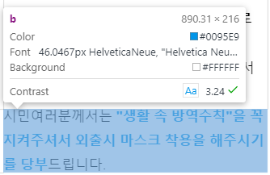
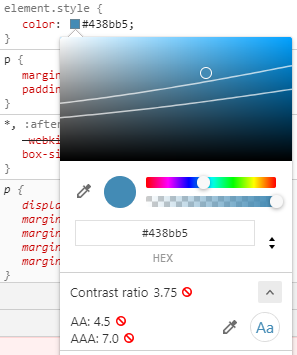

1. 인식의 용의성
1.1 대체 텍스트
(적절한 대체 텍스트 제공) 텍스트 아닌 콘텐츠는 그 의미나 용도를 인식할 수 있도록 대체 텍스트를 제공해야 한다.
링크 : title을 이용하여 대체 텍스트를 제공한다.
이미지 : alt를 이용하여 대체 텍스트를 제공한다. 단순히 장식이나 시작적인 형태를 위해 사용되는 콘텐츠의 경우 대체 텍스트로 공백("")을 제공한다
의미가 있는 배경 이미지 : 숨겨진 텍스트를 이미지 위에 얹어 대체 텍스트를 제공한다.display:none; 또는 visibility:hidden;는 스크린 리더가 읽을 수 없으므로 사용하면 안된다.
width, height, font-size, line-height 등을 0으로 할 경우 스크린리더에서 콘텐츠를 무시한다. 사용금지.
top위치는 페이지의 스크롤에 영향을 주므로, 스크롤이 이동하지 않도록 한다.
.blind {overflow:hidden;position:absolute !important;width:1px;height:1px;clip:rect(0 0 0 0);margin:-1px;color:transparent}
1.2 자막, 수화 등의 제공
(자막, 수화 등의 제공) 영상이나 음성 콘텐츠에는 동등한 내용의 자막, 원고 또는 수화가 제공 되어야 한다.
- a) 영상이나 음성 콘텐츠 내 제공되는 모든 음성정보는 동등한 내용의 자막, 원고, 수화 중 적어도 하나 이상을 제공해야 한다.
- b) 영상이나 음성 콘텐츠에서 화면에 문자 정보가 의미를 가지고 있는 경우 이를 설명하는 별도의 음성 콘텐츠나 원고를 제공해야 한다.
- c) 자막, 원고 또는 수화는 재생되고 있는 영상이나 음성 콘텐츠와 동기화하여 제공한다. 단, 실시간으로 제공되는 영상이나 음성 콘텐츠의 경우는 실시간 자막 또는 수화로 제공할 수 있다.
- d) 음성이나 문자정보 없이 제공되는 영상이나 음성 콘텐츠는 이를 설명하는 화면해설을 제공하는 것이 바람직하다.
1.3 색에 무관한 인식
(색에 무관한 인식) 화면에 표시되는 모든 정보는 색에 관계없이 인식될 수 있어야 한다.
색에 의한 정보 표현을 방지하고 무늬로 정보를 제공한다. active메뉴, 차트나 그래프 등을 고대비 모드에서도 이용할 수 있도록 한다.
1.4 명도 대비
(명도 대비) 화면에 표시되는 모든 사용자 인터페이스 컴포넌트와 텍스트는 전경색과 배경색이 구분될 수 있도록 제공되어야 한다.
화면에 표시되는 모든 사용자 인터페이스 컴포넌트와 텍스트는 전경색과 배경색이 구분될 수 있도록 명도 대비를 3：1 이상으로 제공해야 한다.
- WebAIM 사이트, Contrast Finder에서 색상 값으로 확인할 수 있다.
- 크롬 개발자도구에서 명도대비를 확인 할 수 있다. 다음 이미지 참조
 
1.5 명확한 지시 사항
(명확한 지시 사항 제공) 지시 사항은 모양, 크기, 위치, 방향, 색, 소리 등에 관계없이 인식될 수 있어야 한다.
시각장애인은 콘텐츠의 모양 이나 위치를 인지할 수 없기 때문에 동그란 버튼, 오른쪽 버튼 등으로 지칭하지 않는다.
1.6 알림 기능
(알림 기능) 알림 정보는 화면 표시, 소리, 진동 등 다양한 방법으로 제공되어야 한다.